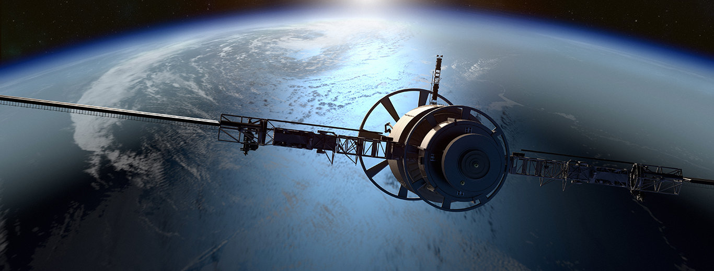
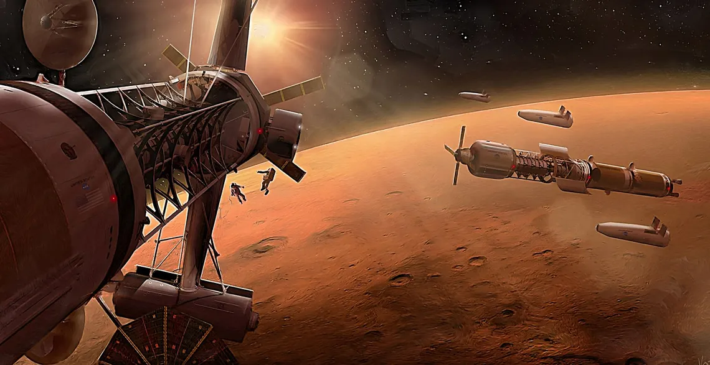
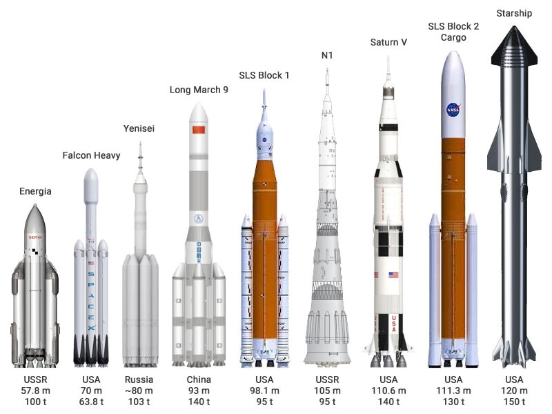

La sonda espacial Voyager 2 fue lanzada el 20 de agosto de 1977 desde Cabo Cañaveral, en un cohete
Titán-Centauro. Es idéntica a su sonda hermana, la Voyager 1. Ambas sondas habían sido concebidas inicialmente
como parte del programa Mariner con los nombres de Mariner 11 y Mariner 12, respectivamente.
A diferencia de su hermana, la Voyager 2 adoptó una trayectoria diferente en su encuentro con Saturno,
sacrificando la cercanía a Titán, pero adoptando un mayor impulso gravitacional en su viaje hacia Urano y
Neptuno. La sonda alcanzó su mayor cercanía con estos planetas en los años 1986 y 1989, respectivamente.
A pesar de que muchos de sus instrumentos se encuentran fuera de servicio, aún continúa inspeccionando los
alrededores del sistema solar. Tardará unos 40 000 años en alcanzar la estrella Ross 248, de la que pasará a una
distancia de 1,7 años luz.
Situada a una distancia de 125,32 UA (1,814×1010 km) el 21 de diciembre de 2020,1 se ha convertido en uno de
los objetos más distantes que han creado los humanos. En la actualidad la única antena disponible para enviar
órdenes a la sonda Voyager 2 es la DSS 43, la antena australiana de la infraestructura Red del Espacio Profundo.
Desde marzo de 2020 se suspendieron las comunicaciones con la sonda pues era necesario realizar una serie de
mejoras en la antena. La antena y la sonda volvieron a retomar el contacto a principios de 2021.
Los logros de SpaceX incluyen el primer cohete de combustible líquido financiado de forma privada en alcanzar
la órbita (Falcon 1 en 2008),6 la primera empresa privada en lanzar a órbita y recuperar una nave (Dragon en
2010), la primera empresa privada en enviar una nave a la Estación Espacial Internacional (Dragon en 2012),7 el
primer aterrizaje propulsado de un cohete orbital (Falcon 9 en 2015), la primera reutilización de un cohete
orbital (Falcon 9 en 2017), la primera empresa privada en lanzar una carga en órbita heliocéntrica (Falcon Heavy
con el Tesla Roadster de Elon Musk en 2018), y la primera compañía en enviar astronautas a la Estación Espacial
Internacional (Dragon 2 en 2020).8 SpaceX ha realizado 209 misiones de reabastecimiento a la ISS bajo una
serie de contratos de la NASA,10 así como una demostración de la Dragon 2 el 2 de marzo de 2019, su primera
cápsula certificada para llevar humanos, y el primer vuelo con tripulación de la Dragon 2 el 30 de mayo de
2020.8 En enero de 2020, con el tercer lanzamiento de Starlink, se convirtió en el operador con la mayor
constelación de satélites del mundo.
En septiembre de 2016, Musk presentó el Sistema de transporte interplanetario —más tarde renombrado Starship— un
sistema de lanzamiento financiado de forma privada orientado a realizar vuelos interplanetarios tripulados. En
2017 se presentó una actualización a las especificaciones del sistema que lo hacían factible para sustituir a
todos sus vehículos siendo usado tanto en misiones interplanetarias como las de la órbita baja
terrestre.131415: 24:50–27:05 Starship se proyecta como un vehículo completamente reutilizable y será el más
grande de la historia en el momento de su puesta en servicio.
La llegada a Marte en una misión tripulada es uno de los objetivos más ambiciosos de la carrera espacial en la actualidad, después de que numerosas misiones (como Perseverance) hayan o estén trabajando en la superficie del planeta rojo. Elon Musk y su empresa SpaceX forman parte de los máximos exponentes para conseguirlo y lo quieren hacer con el Starship.
La construcción de este cohete lleva captando interés (y sobre todo miradas) desde que se empezaron a ensamblar los prototipos. Esta misión (de nomenclatura sencilla aunque quizás mucho más conveniente que la inicial) ya va tomando forma, habiendo visto recientemente fotografías que impresionan de sus motores, y no está de más repasar en qué consiste esta misión, cómo se está desarrollando y cuándo se espera su lanzamiento.
Ahora bien, el mayor problema de la colonización marciana no es, como podríamos creer, el transporte, sino en desarrollar las habilidades necesarias para utilizar los recursos marcianos y conseguir que la base sea relativamente autosuficiente.
Los comienzos serán duros, y los astronautas, los primeros marcianos, se irán quedando en el planeta tiempos cada vez más largos: cuatro años, después seis..., viviendo en las primeras bases permanentes establecidas en otro cuerpo del Sistema Solar: domos de 50 metros de diámetro construidos con plásticos como el Kevlar o el Spectra. Plantas modificadas genéticamente para adaptarse al nivel de dióxido de carbono marciano serán los primeros seres vivos no humanos que llevaremos. Y éste es el paso crucial. Freeman Dyson, uno de los científicos más grandes e imaginativos del siglo XX, llamó la atención sobre este hecho: la expansión del ser humano por el espacio depende radicalmente de la biología. Los avances biotecnológicos son los que van a marcar el ritmo y la capacidad de viajar por el espacio: “cualquier programa de exploración tripulada debe estar centrada en la biología”, afirmó.
La misión Starship consiste en la construcción de un cohete de dos etapas: el Starship como tal y el vehículo de lanzamiento, apodado Starship Super Heavy (esa fase que veíamos en las fotografías que citábamos en la introducción). La idea es, según SpaceX, que este combo sea un sistema reutilizable de transporte capaz de llegar a Marte tirando de agua y dióxido de carbono.
El propulsor, Starship Super Heavy, cuenta en su último prototipo (Booster 4) con 29 motores y sirve para que Starship pueda salir de la Tierra, volviendo a la misma para ser reutilizado según lo que explican. La empresa lleva tiempo trabajando con propulsores reutilizables, de modo que al cumplir con su tarea regresan a una plataforma, aunque con el Super Heavy se ha pensado también que la propia torre de lanzamiento lo "cace" con su brazo en el aire justo antes de que toque suelo, y así no necesitar unas patas (y quitarle peso).
Este apelativo, que tras tanto cambio de nomenclatura parece haberse asentado, no vino en vano. La nave completa medirá 120 metros y será capaz de transportar 150 toneladas de carga útil máxima, con una masa total de despegue de 4.000 toneladas.
Con estas características supera en tamaño al sistema de lanzamiento SLS (Space Launch System) de la NASA y al propio Falcon Heavy de SpaceX, el que fue el cohete más potente del siglo en su momento. Pero el sistema Starship se llevará definitivamente ese título si cumple con todo lo previsto, ya que tendrá una propulsión cinco veces más fuerte que ese cel Falcon Heavy, según MSN.
Los motores incluidos son Raptor, unos motores atmosféricos cuyo objetivo es lograr un impulso de 200 atmósferas, de momento habiendo alcanzado las 185 toneladas. El prototipo actual que mencionábamos, el Booster 4, dará teóricamente un empuje de unas 5.400 toneladas al lanzamiento.
La intención es, pues, tener un sistema de transporte para carga y pasajeros que sea capaz de:
Salir de la Tierra y llegar a órbita en una etapa, mientras la otra (el vehículo de lanzamiento) vuelve a la plataforma de lanzamiento para su posible reutilización.
Repostar en órbita.
Iniciar viajes de largo recorrido, como el que va desde la órbita terrestre a Marte.
Aterrizar en Marte.
Repostar en Marte (recurriendo a dióxido de carbono y agua).
Salir de Marte y de su órbita para volver a la Tierra

Más preocupante aún es el comportamiento del componente principal de la misión: el ser humano. ¿Cómo funciona la psicología en un viaje de larga duración? Si te enfadas en la tierra puedes dar un portazo y marcharte pero, ¿y en el espacio? ¿Cómo afecta el viaje espacial a la sexualidad humana? ¿Y la alimentación? ¿Quién está dispuesto a alimentarse durante cinco años -como mínimo- con ‘comida de astronautas’?

La compañía ha llegado a hablar incluso de 37 motores, si bien como hemos ido viendo con los materiales de construcción y otros aspectos el proyecto ha ido experimentando cambios a lo largo de su desarrollo y las pruebas con prototipos.